Microdatos Saber 11 · Región Caribe · Periodo 2023
Autores
Santiago José Cuesta Maza · T00082473
Valeria Estefanía Berrio Payares · T00082178
Luis Eduardo Mendoza Angulo · T00082297
Deiner de Jesús Gonzalez Paredes · T00082648
Danna Valentina Zuluaga Hernández · T00082548
| ESTU_NACIONALIDAD | ESTU_PAIS_RESIDE | ESTU_AREARESIDE | ESTU_VALORMATRICULAUNIVERSIDAD | ESTU_PAGOMATRICULACREDITO | ESTU_PAGOMATRICULAPROPIO | ESTU_PAGOMATRICULABECA | ESTU_PAGOMATRICULAPADRES | ESTU_SEMESTRECURSA | FAMI_EDUCACIONPADRE | ... | MOD_INGLES_PUNT | MOD_INGLES_DESEM | MOD_COMUNI_ESCRITA_PUNT | MOD_COMUNI_ESCRITA_DESEM | PUNT_GLOBAL | ESTU_NSE_INDIVIDUAL | ESTU_NSE_IES | ESTU_GENERO | PERIODO | ESTU_MCPIO_RESIDE | |
|---|---|---|---|---|---|---|---|---|---|---|---|---|---|---|---|---|---|---|---|---|---|
| 0 | COLOMBIA | COLOMBIA | Area Rural | Más de 7 millones | No | No | No | Si | 08 | Secundaria (Bachillerato) incompleta | ... | 189.0 | B1 | 85 | 1.0 | 136 | 4.0 | 4.0 | M | 20212 | BARRANQUILLA |
| 1 | COLOMBIA | COLOMBIA | Cabecera Municipal | Menos de 500 mil | No | Si | Si | No | 09 | Educación profesional completa | ... | 141.0 | A2 | 159 | 3.0 | 131 | 2.0 | 2.0 | M | 20212 | VALLEDUPAR |
| 2 | COLOMBIA | COLOMBIA | Cabecera Municipal | Entre 2.5 millones y menos de 4 millones | No | No | No | Si | 09 | Postgrado | ... | 147.0 | A2 | 122 | 2.0 | 117 | 3.0 | 3.0 | F | 20212 | CARTAGENA DE INDIAS |
| 3 | COLOMBIA | COLOMBIA | Cabecera Municipal | Entre 500 mil y menos de 1 millón | No | No | No | Si | 09 | Postgrado | ... | 213.0 | B2 | 145 | 2.0 | 193 | 4.0 | 2.0 | F | 20212 | SANTA MARTA |
| 4 | COLOMBIA | COLOMBIA | Cabecera Municipal | Entre 2.5 millones y menos de 4 millones | No | No | No | Si | 09 | Técnica o tecnológica incompleta | ... | 168.0 | B1 | 172 | 3.0 | 149 | 1.0 | 3.0 | F | 20212 | CARTAGENA DE INDIAS |
| ... | ... | ... | ... | ... | ... | ... | ... | ... | ... | ... | ... | ... | ... | ... | ... | ... | ... | ... | ... | ... | ... |
| 131179 | COLOMBIA | COLOMBIA | Cabecera Municipal | Entre 5.5 millones y menos de 7 millones | Si | No | No | Si | 06 | Educación profesional incompleta | ... | 177.0 | B1 | 189 | 4.0 | 165 | NaN | NaN | F | 20233 | BARANOA |
| 131180 | COLOMBIA | COLOMBIA | Cabecera Municipal | Más de 7 millones | No | No | Si | No | 11 | Educación profesional completa | ... | 190.0 | B1 | 124 | 2.0 | 167 | NaN | NaN | M | 20233 | SAN JUAN DEL CESAR |
| 131181 | COLOMBIA | COLOMBIA | Cabecera Municipal | Entre 4 millones y menos de 5.5 millones | No | No | No | Si | 09 | Educación profesional completa | ... | 143.0 | A2 | 171 | 3.0 | 149 | NaN | NaN | F | 20233 | LA JAGUA DE IBIRICO |
| 131182 | COLOMBIA | COLOMBIA | Cabecera Municipal | Entre 1 millón y menos de 2.5 millones | Si | No | No | No | 08 | Técnica o tecnológica incompleta | ... | 175.0 | B1 | 174 | 3.0 | 184 | NaN | NaN | F | 20233 | VALLEDUPAR |
| 131183 | COLOMBIA | COLOMBIA | Cabecera Municipal | Entre 2.5 millones y menos de 4 millones | Si | Si | No | No | 07 | Primaria incompleta | ... | 181.0 | B1 | 166 | 3.0 | 127 | NaN | NaN | F | 20233 | VALLEDUPAR |
131184 rows × 46 columns
| ESTU_NACIONALIDAD | ESTU_PAIS_RESIDE | ESTU_AREARESIDE | ESTU_VALORMATRICULAUNIVERSIDAD | ESTU_PAGOMATRICULACREDITO | ESTU_PAGOMATRICULAPROPIO | ESTU_PAGOMATRICULABECA | ESTU_PAGOMATRICULAPADRES | ESTU_SEMESTRECURSA | FAMI_EDUCACIONPADRE | ... | MOD_INGLES_PUNT | MOD_INGLES_DESEM | MOD_COMUNI_ESCRITA_PUNT | MOD_COMUNI_ESCRITA_DESEM | PUNT_GLOBAL | ESTU_NSE_INDIVIDUAL | ESTU_NSE_IES | ESTU_GENERO | PERIODO | ESTU_MCPIO_RESIDE | |
|---|---|---|---|---|---|---|---|---|---|---|---|---|---|---|---|---|---|---|---|---|---|
| 0 | COLOMBIA | COLOMBIA | Area Rural | Más de 7 millones | False | False | False | True | 08 | Secundaria (Bachillerato) incompleta | ... | 189.0 | B1 | 85 | 1.0 | 136 | 4.0 | 4.0 | M | 20212 | BARRANQUILLA |
| 1 | COLOMBIA | COLOMBIA | Cabecera Municipal | Menos de 500 mil | False | True | True | False | 09 | Educación profesional completa | ... | 141.0 | A2 | 159 | 3.0 | 131 | 2.0 | 2.0 | M | 20212 | VALLEDUPAR |
| 2 | COLOMBIA | COLOMBIA | Cabecera Municipal | Entre 2.5 millones y menos de 4 millones | False | False | False | True | 09 | Postgrado | ... | 147.0 | A2 | 122 | 2.0 | 117 | 3.0 | 3.0 | F | 20212 | CARTAGENA DE INDIAS |
| 3 | COLOMBIA | COLOMBIA | Cabecera Municipal | Entre 500 mil y menos de 1 millón | False | False | False | True | 09 | Postgrado | ... | 213.0 | B2 | 145 | 2.0 | 193 | 4.0 | 2.0 | F | 20212 | SANTA MARTA |
| 4 | COLOMBIA | COLOMBIA | Cabecera Municipal | Entre 2.5 millones y menos de 4 millones | False | False | False | True | 09 | Técnica o tecnológica incompleta | ... | 168.0 | B1 | 172 | 3.0 | 149 | 1.0 | 3.0 | F | 20212 | CARTAGENA DE INDIAS |
| ... | ... | ... | ... | ... | ... | ... | ... | ... | ... | ... | ... | ... | ... | ... | ... | ... | ... | ... | ... | ... | ... |
| 131179 | COLOMBIA | COLOMBIA | Cabecera Municipal | Entre 5.5 millones y menos de 7 millones | True | False | False | True | 06 | Educación profesional incompleta | ... | 177.0 | B1 | 189 | 4.0 | 165 | 2.0 | 2.0 | F | 20233 | BARANOA |
| 131180 | COLOMBIA | COLOMBIA | Cabecera Municipal | Más de 7 millones | False | False | True | False | 11 | Educación profesional completa | ... | 190.0 | B1 | 124 | 2.0 | 167 | 2.0 | 2.0 | M | 20233 | SAN JUAN DEL CESAR |
| 131181 | COLOMBIA | COLOMBIA | Cabecera Municipal | Entre 4 millones y menos de 5.5 millones | False | False | False | True | 09 | Educación profesional completa | ... | 143.0 | A2 | 171 | 3.0 | 149 | 2.0 | 2.0 | F | 20233 | LA JAGUA DE IBIRICO |
| 131182 | COLOMBIA | COLOMBIA | Cabecera Municipal | Entre 1 millón y menos de 2.5 millones | True | False | False | False | 08 | Técnica o tecnológica incompleta | ... | 175.0 | B1 | 174 | 3.0 | 184 | 2.0 | 2.0 | F | 20233 | VALLEDUPAR |
| 131183 | COLOMBIA | COLOMBIA | Cabecera Municipal | Entre 2.5 millones y menos de 4 millones | True | True | False | False | 07 | Primaria incompleta | ... | 181.0 | B1 | 166 | 3.0 | 127 | 2.0 | 2.0 | F | 20233 | VALLEDUPAR |
131184 rows × 46 columns
El análisis se fundamenta en los microdatos de las pruebas de Estado, registros a nivel de individuo proporcionados por el SaberPro a través de su Portal Data SaberPro.
Población objetivo — Cohorte de estudiantes de la región Caribe, periodo 2023. Permite un análisis localizado y actual de brechas educativas.
object a tipos numéricos y fecha.category.True/False.| Variable | Tipo | n | Descripción |
|---|---|---|---|
| PUNT_GLOBAL | Continuo | 131,184 | Puntaje total del estudiante (0–500) |
| MOD_INGLES_PUNT | Continuo | 131,184 | Puntaje módulo bilingüismo |
| MOD_LECTURA_CRITICA_PUNT | Continuo | 131,184 | Puntaje lectura crítica |
| MOD_RAZONA_CUANTITAT_PUNT | Continuo | 131,184 | Puntaje razonamiento cuantitativo |
| MOD_COMPETEN_CIUDADA_PUNT | Continuo | 131,184 | Puntaje competencias ciudadanas |
| ESTU_GENERO | Nominal | 131,184 | Género del examinado |
| FAMI_TIENEINTERNET | Nominal | 131,184 | Acceso a internet en el hogar |
| FAMI_TIENECOMPUTADOR | Nominal | 131,184 | Computador en el hogar |
| ESTU_AREARESIDE | Nominal | 131,184 | Área de residencia |
| ESTU_DEPTO_RESIDE | Nominal | 131,184 | Departamento de residencia |
Dataset:
df(cargado, sin limpiar) · Función manual sinisnull(),duplicated()nisum()de pandas.
Total filas (manual) : 131,184
Duplicados (manual) : 806
Top 10 variables con más NAs:
Variable NAs (manual) % NA (manual)
ESTU_NACIONALIDAD 0 0.0
ESTU_PAIS_RESIDE 0 0.0
ESTU_AREARESIDE 0 0.0
ESTU_VALORMATRICULAUNIVERSIDAD 0 0.0
ESTU_PAGOMATRICULACREDITO 0 0.0
ESTU_PAGOMATRICULAPROPIO 0 0.0
ESTU_PAGOMATRICULABECA 0 0.0
ESTU_PAGOMATRICULAPADRES 0 0.0
ESTU_SEMESTRECURSA 0 0.0
FAMI_EDUCACIONPADRE 0 0.0Total filas (nativa) : 131,184
Duplicados (nativa) : 806
Top 10 variables con más NAs:
Variable NAs (nativa) % NA (nativa)
ESTU_NACIONALIDAD 0 0.0
ESTU_PAIS_RESIDE 0 0.0
ESTU_AREARESIDE 0 0.0
ESTU_VALORMATRICULAUNIVERSIDAD 0 0.0
ESTU_PAGOMATRICULACREDITO 0 0.0
ESTU_PAGOMATRICULAPROPIO 0 0.0
ESTU_PAGOMATRICULABECA 0 0.0
ESTU_PAGOMATRICULAPADRES 0 0.0
ESTU_SEMESTRECURSA 0 0.0
FAMI_EDUCACIONPADRE 0 0.0Todos los conteos de NA coinciden entre función manual y nativa.[Text(4, 0, '0.00%'),
Text(4, 0, '0.00%'),
Text(4, 0, '0.00%'),
Text(4, 0, '0.00%'),
Text(4, 0, '0.00%'),
Text(4, 0, '0.00%'),
Text(4, 0, '0.00%'),
Text(4, 0, '0.00%'),
Text(4, 0, '0.00%'),
Text(4, 0, '0.00%')]Text(0.5, 0, '% de valores nulos')Text(0.5, 1.0, 'Top 10 variables con mayor % de NAs')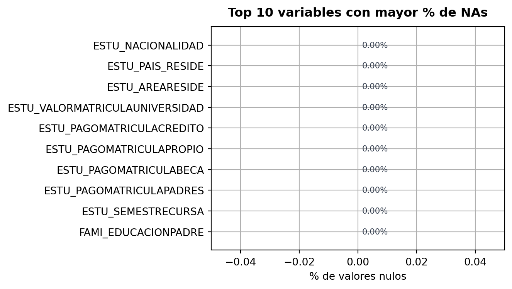
Categoría Frec. Absoluta Frec. Relativa % Frec. Acumulada
M 54528 41.57 54528
F 76656 58.43 131184
Moda: F
Frecuencias coinciden.
Moda manual: F | Moda nativa: F [igual]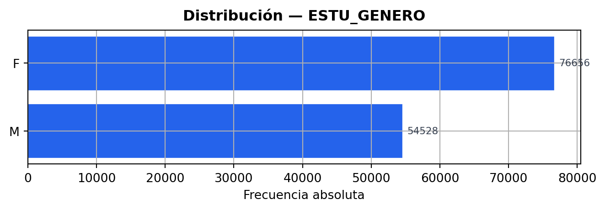
Categoría Frec. Absoluta Frec. Relativa % Frec. Acumulada
True 106647 81.3 106647
False 24537 18.7 131184
Moda: True
Diferencias encontradas:
Categoría Frec. Absoluta Frec. Relativa % Frec. Acumulada Frec. Nativa Coincide
True 106647 81.3 106647 NaN False
False 24537 18.7 131184 NaN False
Moda manual: True | Moda nativa: True [igual]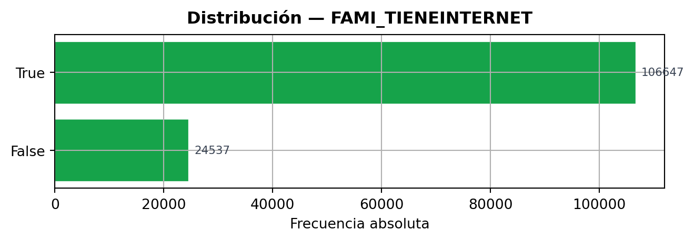
Categoría Frec. Absoluta Frec. Relativa % Frec. Acumulada
True 102273 77.96 102273
False 28911 22.04 131184
Moda: True
Diferencias encontradas:
Categoría Frec. Absoluta Frec. Relativa % Frec. Acumulada Frec. Nativa Coincide
True 102273 77.96 102273 NaN False
False 28911 22.04 131184 NaN False
Moda manual: True | Moda nativa: True [igual]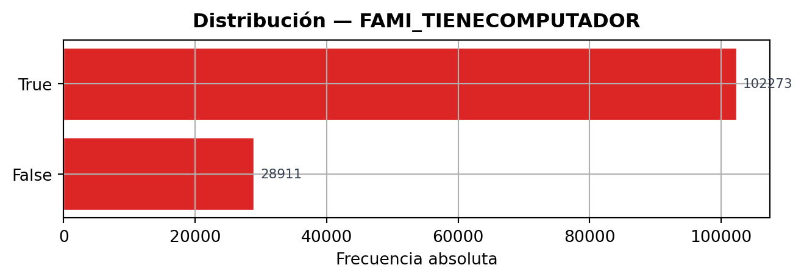
Categoría Frec. Absoluta Frec. Relativa % Frec. Acumulada
Area Rural 17209 13.12 17209
Cabecera Municipal 113975 86.88 131184
Moda: Cabecera Municipal
Frecuencias coinciden.
Moda manual: Cabecera Municipal | Moda nativa: Cabecera Municipal [igual]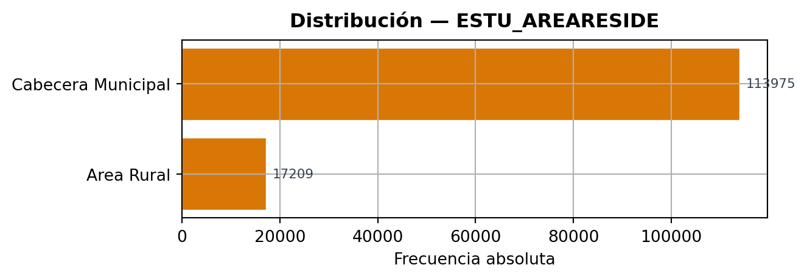
Categoría Frec. Absoluta Frec. Relativa % Frec. Acumulada
ATLANTICO 42937 32.73 42937
CESAR 14236 10.85 57173
BOLIVAR 24924 19.00 82097
MAGDALENA 12355 9.42 94452
CORDOBA 18214 13.88 112666
LA GUAJIRA 8222 6.27 120888
SUCRE 10296 7.85 131184
Moda: ATLANTICO
Frecuencias coinciden.
Moda manual: ATLANTICO | Moda nativa: ATLANTICO [igual]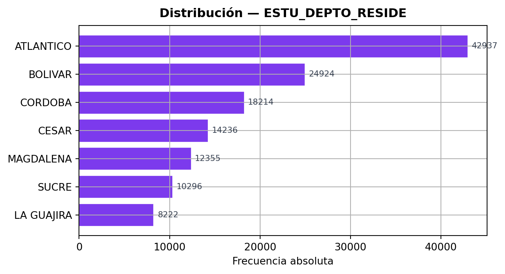
n : 131184
Media : 139.3175
Mediana : 138.0
Moda : 138.0
Desv.Std : 24.6401
Medida Manual Nativa OK?
--------------------------------------------
Media 139.3175 139.3175 igual
Mediana 138.0 138.0 igual
Moda 138.0 138 igual
Desv.Std 24.6401 24.6401 igual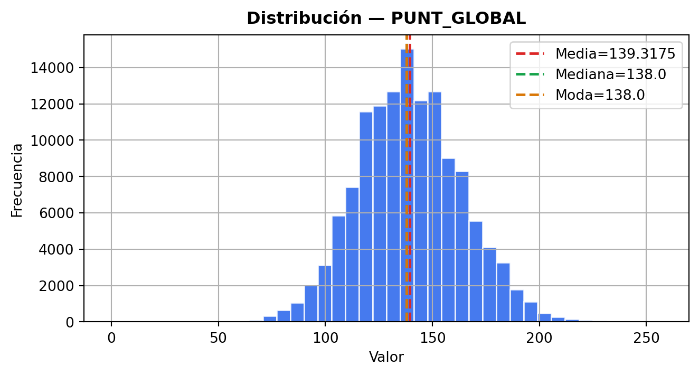
n : 131184
Media : 148.3287
Mediana : 145.0
Moda : 129.0
Desv.Std : 32.9851
Medida Manual Nativa OK?
--------------------------------------------
Media 148.3287 148.3287 igual
Mediana 145.0 145.0 igual
Moda 129.0 129.0 igual
Desv.Std 32.9851 32.9851 igual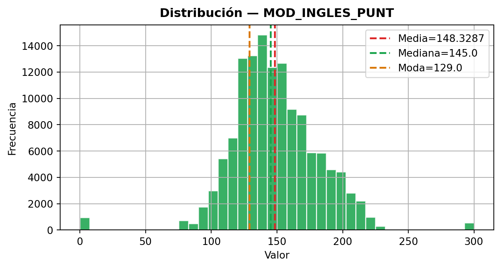
n : 131184
Media : 144.1661
Mediana : 143.0
Moda : 131.0
Desv.Std : 30.5405
Medida Manual Nativa OK?
--------------------------------------------
Media 144.1661 144.1661 igual
Mediana 143.0 143.0 igual
Moda 131.0 131 igual
Desv.Std 30.5405 30.5405 igual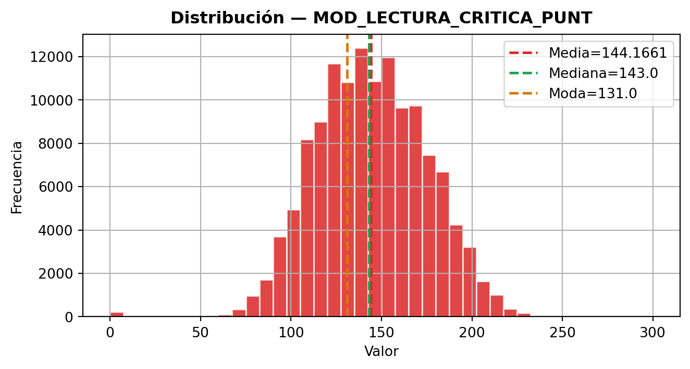
n : 131184
Media : 136.6911
Mediana : 135.0
Moda : 135.0
Desv.Std : 31.2924
Medida Manual Nativa OK?
--------------------------------------------
Media 136.6911 136.6911 igual
Mediana 135.0 135.0 igual
Moda 135.0 135 igual
Desv.Std 31.2924 31.2924 igual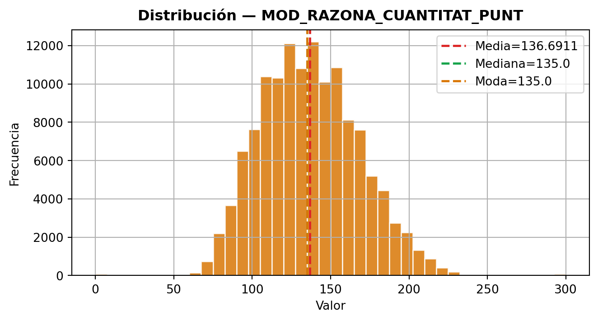
n : 131184
Media : 136.0149
Mediana : 135.0
Moda : 134.0
Desv.Std : 33.292
Medida Manual Nativa OK?
--------------------------------------------
Media 136.0149 136.0149 igual
Mediana 135.0 135.0 igual
Moda 134.0 134 igual
Desv.Std 33.292 33.292 igual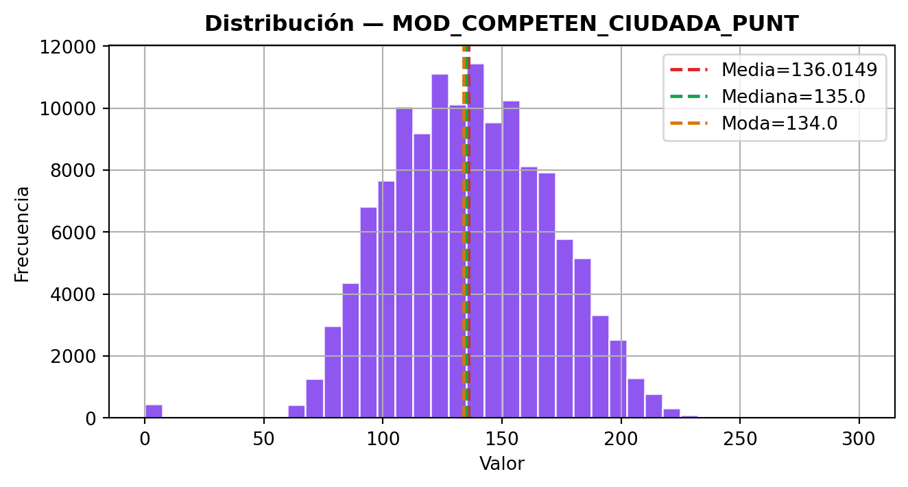
n : 131184
Q1 : 123.0
Q2 : 138.0
Q3 : 155.0
Medida Manual Nativa OK?
------------------------------------------
Q1 123.0 123.0 igual
Q2 138.0 138.0 igual
Q3 155.0 155.0 igual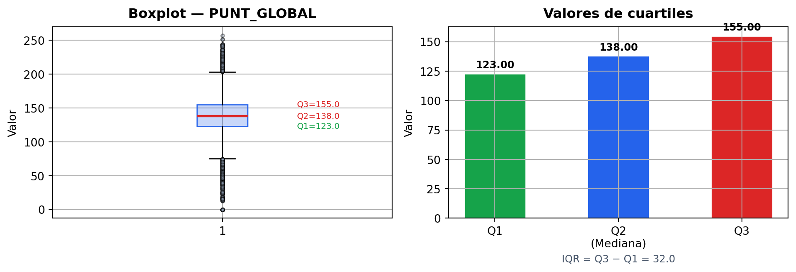
n : 131184
Q1 : 128.0
Q2 : 145.0
Q3 : 168.0
Medida Manual Nativa OK?
------------------------------------------
Q1 128.0 128.0 igual
Q2 145.0 145.0 igual
Q3 168.0 168.0 igual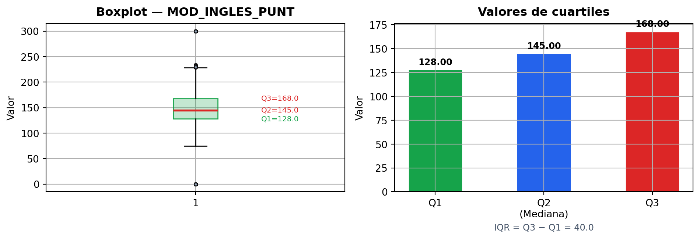
n : 131184
Q1 : 122.0
Q2 : 143.0
Q3 : 166.0
Medida Manual Nativa OK?
------------------------------------------
Q1 122.0 122.0 igual
Q2 143.0 143.0 igual
Q3 166.0 166.0 igual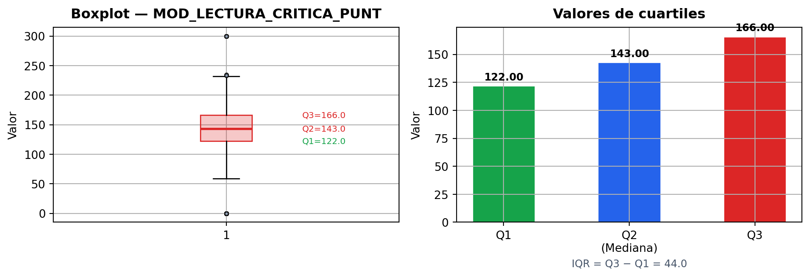
n : 131184
Q1 : 113.0
Q2 : 135.0
Q3 : 158.0
Medida Manual Nativa OK?
------------------------------------------
Q1 113.0 113.0 igual
Q2 135.0 135.0 igual
Q3 158.0 158.0 igual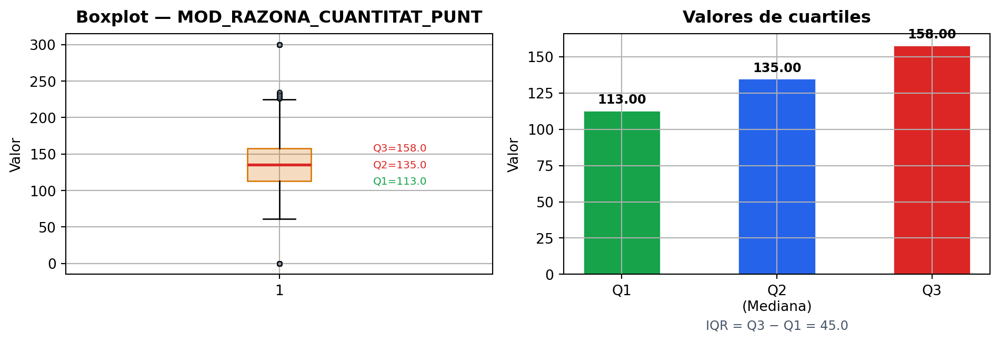
n : 131184
Q1 : 111.0
Q2 : 135.0
Q3 : 160.0
Medida Manual Nativa OK?
------------------------------------------
Q1 111.0 111.0 igual
Q2 135.0 135.0 igual
Q3 160.0 160.0 igual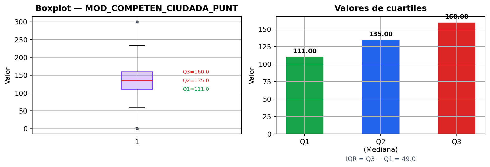
Asimetría : 0.0577
Curtosis : 3.4912
Medida Manual Scipy OK?
----------------------------------------------
Asimetría 0.0577 0.0577 igual
Curtosis 3.4912 3.4912 igual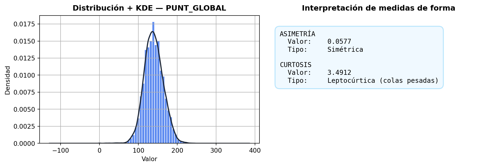
Asimetría : 0.0027
Curtosis : 6.4604
Medida Manual Scipy OK?
----------------------------------------------
Asimetría 0.0027 0.0027 igual
Curtosis 6.4604 6.4604 igual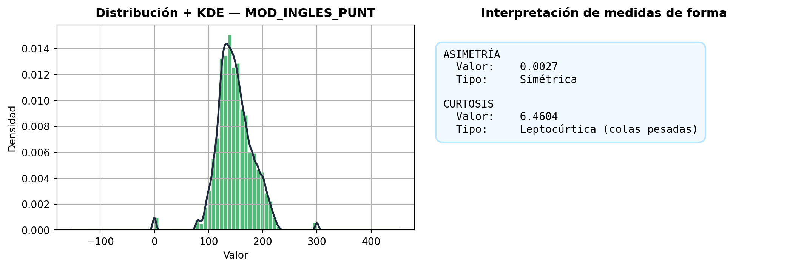
Asimetría : -0.0252
Curtosis : 3.3726
Medida Manual Scipy OK?
----------------------------------------------
Asimetría -0.0252 -0.0252 igual
Curtosis 3.3726 3.3726 igual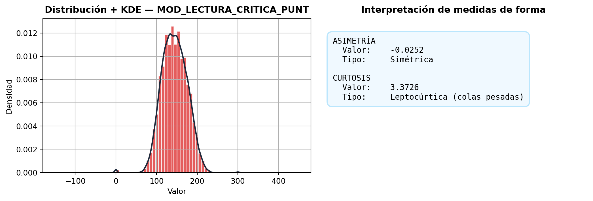
Asimetría : 0.2891
Curtosis : 3.1502
Medida Manual Scipy OK?
----------------------------------------------
Asimetría 0.2891 0.2891 igual
Curtosis 3.1502 3.1502 igual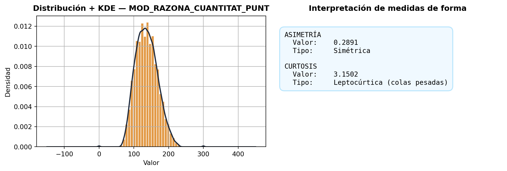
Asimetría : -0.0212
Curtosis : 3.2993
Medida Manual Scipy OK?
----------------------------------------------
Asimetría -0.0212 -0.0212 igual
Curtosis 3.2993 3.2993 igual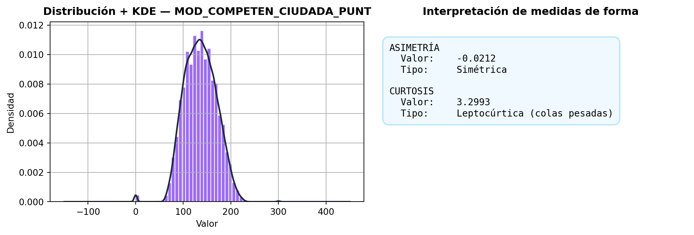
| Campo | Detalle |
|---|---|
| Institución | Instituto Colombiano para la Evaluación de la Educación — SaberPro |
| Prueba | Saber 11 |
| Periodo | 2023 |
| Región | Caribe |
| Portal | https://www.SaberPro.gov.co/data-SaberPro |
| Método de acceso | Solicitud formal mediante registro y encuesta en el portal Data SaberPro |
| Licencia | Datos abiertos — uso académico e investigativo |
| Formato | .csv — microdatos a nivel de estudiante |
| # | Medida | Referencia |
|---|---|---|
| [1] | Media aritmética | Walpole, R. E., Myers, R. H., & Myers, S. L. (2012). Probability & Statistics for Engineers and Scientists (9.ª ed.). Pearson. Cap. 1, p. 15. |
| [2] | Mediana | Montgomery, D. C., & Runger, G. C. (2018). Applied Statistics and Probability for Engineers (7.ª ed.). Wiley. Cap. 6, p. 200. |
| [3] | Moda | Triola, M. F. (2018). Elementary Statistics (13.ª ed.). Pearson Education. Cap. 3, p. 86. |
| [4] | Desviación estándar / Varianza | Devore, J. L. (2015). Probability and Statistics for Engineering and the Sciences (9.ª ed.). Cengage. Cap. 4, p. 150. |
| [5] | Cuartiles e IQR (M.D.L.) | Mendenhall, W., Beaver, R. J., & Beaver, B. M. (2013). Introduction to Probability and Statistics (14.ª ed.). Cengage. Cap. 2, p. 55. |
| [6] | Asimetría y Curtosis (M.D.F.) | Spiegel, M. R., & Stephens, L. J. (2008). Statistics (4.ª ed.). McGraw-Hill Schaum’s Outlines. Cap. 4, p. 90. |
| [7] | Fuente de datos | Instituto Colombiano para la Evaluación de la Educación — SaberPro. (2023). Microdatos Saber 11. Portal Data SaberPro. https://www.SaberPro.gov.co/data-SaberPro |